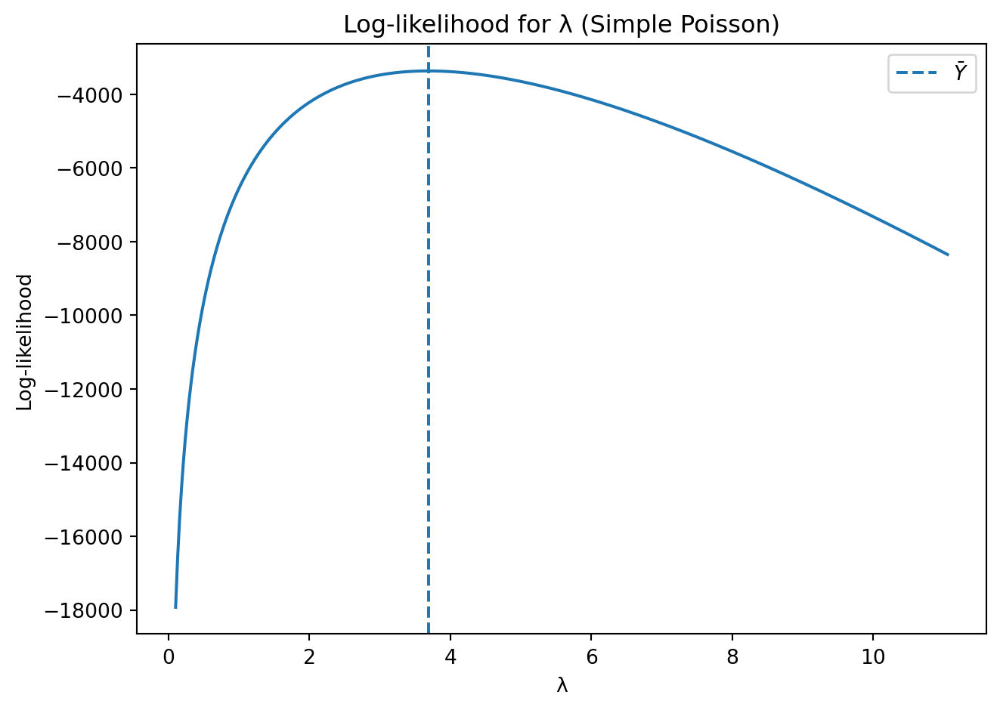
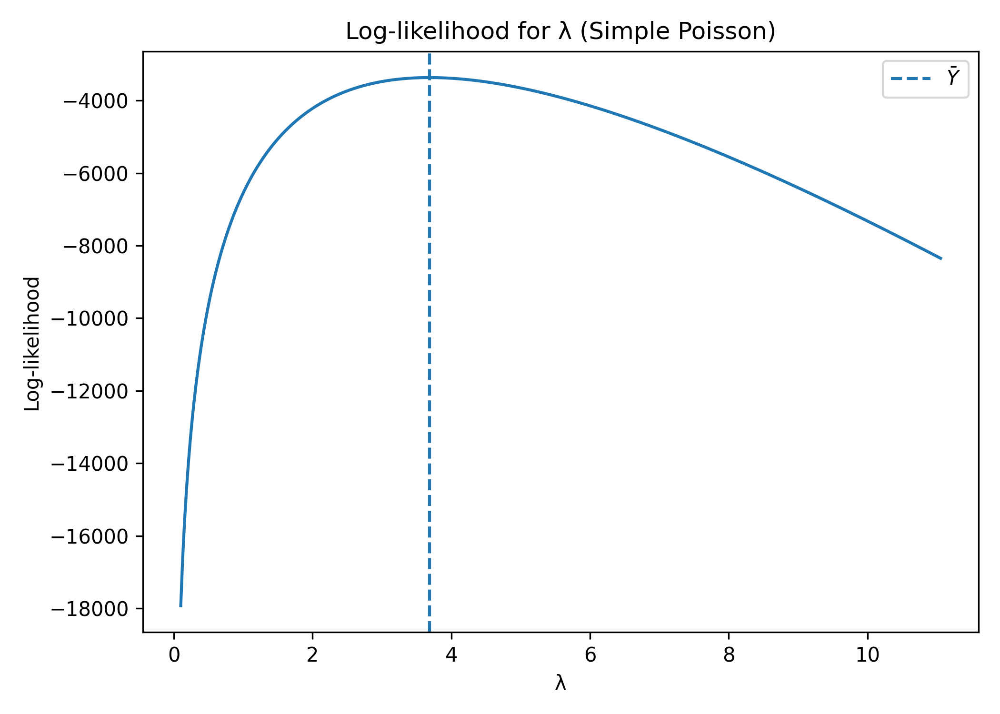

Blueprinty is a small firm that makes software for developing blueprints specifically for submitting patent applications to the US patent office. Their marketing team would like to make the claim that patent applicants using Blueprinty’s software are more successful in getting their patent applications approved. Ideal data to study such an effect might include the success rate of patent applications before using Blueprinty’s software and after using it. Unfortunately, such data is not available.
However, Blueprinty has collected data on 1,500 mature (non-startup) engineering firms. The data include each firm’s number of patents awarded over the last five years, regional location, age since incorporation, and whether or not the firm uses Blueprinty’s software. The marketing team would like to use this data to make the claim that firms using Blueprinty’s software are more successful in getting their patent applications approved.
Blueprinty customers are not selected at random. It may be important to account for systematic differences in the age and regional location of customers vs non-customers.
Data
Show/Hide Code
import pandas as pdimport numpy as npimport matplotlib.pyplot as pltimport statsmodels.api as smimport statsmodels.formula.api as smffrom scipy.special import gammalnfrom scipy.optimize import minimizefrom scipy.stats import normimport pathlibimport pandas as pd, matplotlib.pyplot as plt, numpy as np, pathlibblue = (pd.read_csv("blueprinty.csv") .replace([np.inf, -np.inf], np.nan) .dropna(subset=["patents", "age", "region", "iscustomer"]))blue["age2"] = blue["age"]**2# summary tablesprint("--- Patents by customer status ---")print(blue.groupby("iscustomer")["patents"].describe()[["mean","std"]])print("\n--- Age by customer status ---")print(blue.groupby("iscustomer")["age"].describe()[["mean","std","min","max"]])print("\n--- Region shares ---")print(pd.crosstab(blue["region"], blue["iscustomer"], normalize="columns").round(3))
--- Patents by customer status ---
mean std
iscustomer
0 3.473013 2.225060
1 4.133056 2.546846
--- Age by customer status ---
mean std min max
iscustomer
0 26.101570 6.945426 9.0 47.5
1 26.900208 7.814678 10.0 49.0
--- Region shares ---
iscustomer 0 1
region
Midwest 0.184 0.077
Northeast 0.268 0.682
Northwest 0.155 0.060
South 0.153 0.073
Southwest 0.240 0.108
Since our outcome variable of interest can only be small integer values per a set unit of time, we can use a Poisson density to model the number of patents awarded to each engineering firm over the last five years. We start by estimating a simple Poisson model via Maximum Likelihood.
Show/Hide Code
from scipy.special import gammalnfrom scipy.optimize import minimizeY = blue["patents"].astype(int).to_numpy()def nll(lmbda): l = lmbda[0]return np.inf if l<=0else-(Y*np.log(l)-l-gammaln(Y+1)).sum()λ_grid = np.linspace(0.1, Y.mean()*3, 400)ll_vals = [-nll([g]) for g in λ_grid]plt.figure()plt.plot(λ_grid, ll_vals)plt.axvline(Y.mean(), ls="--", label=r"$\bar{Y}$")plt.title("Log-likelihood for λ (Simple Poisson)")plt.xlabel("λ"); plt.ylabel("Log-likelihood"); plt.legend()plt.tight_layout(); plt.savefig("figures/blue_ll_curve.png", dpi=300)mle = minimize(nll, [Y.mean()], bounds=[(1e-9,None)])print("MLE λ̂ =", round(mle.x[0],4))
MLE λ̂ = 3.6847


Estimation of Poisson Regression Model
Next, we extend our simple Poisson model to a Poisson Regression Model such that \(Y_i \sim \text{Poisson}(\lambda_i)\) where \(\lambda_i=\exp(X_i'\beta)\). The interpretation is that the success rate of patent awards is not constant across all firms (\(\lambda\)) but rather is a function of firm characteristics \(X_i\). Specifically, we use the covariates age, age squared, region, and whether the firm is a customer of Blueprinty.
Show/Hide Code
import statsmodels.formula.api as smfglm_blue = smf.glm("patents ~ age + age2 + C(region) + iscustomer", data=blue, family=sm.families.Poisson()).fit()print(glm_blue.summary2().tables[1][["Coef.","Std.Err.","z","P>|z|"]].round(4))
mu_no = glm_blue.predict(blue.assign(iscustomer=0))mu_yes = glm_blue.predict(blue.assign(iscustomer=1))print("Average predicted Δ patents if all became customers:",round((mu_yes-mu_no).mean(),3))
Average predicted Δ patents if all became customers: 0.793
Interpretation: The customer coefficient β̂ ≈ 0.208 (p < 0.001) implies Blueprinty users file ≈ 23 % more patents; the average predicted gain is 0.79 patents over five years.
AirBnB Case Study
Introduction
AirBnB is a popular platform for booking short-term rentals. In March 2017, students Annika Awad, Evan Lebo, and Anna Linden scraped 40 000 Airbnb listings from New York City. The data include the following variables:
Variable Definitions
- `id` = unique ID number for each unit
- `last_scraped` = date when information scraped
- `host_since` = date when host first listed the unit on Airbnb
- `days` = `last_scraped` - `host_since` = number of days the unit has been listed
- `room_type` = Entire home/apt., Private room, or Shared room
- `bathrooms` = number of bathrooms
- `bedrooms` = number of bedrooms
- `price` = price per night (dollars)
- `number_of_reviews` = number of reviews for the unit on Airbnb
- `review_scores_cleanliness` = a cleanliness score from reviews (1-10)
- `review_scores_location` = a "quality of location" score from reviews (1-10)
- `review_scores_value` = a "quality of value" score from reviews (1-10)
- `instant_bookable` = "t" if instantly bookable, "f" if not
Data
Show/Hide Code
air = (pd.read_csv("airbnb.csv") .assign(instant_bookable=lambda d:(d["instant_bookable"]=="t").astype(int)) .dropna(subset=["number_of_reviews","days","room_type","bathrooms","bedrooms","price","review_scores_cleanliness","review_scores_location","review_scores_value"]))print("Rows after cleaning:", len(air))
Rows after cleaning: 30160
Show/Hide Code
air["number_of_reviews"].hist(bins=50)plt.title("Review Count Distribution")plt.xlabel("Number of Reviews"); plt.ylabel("Frequency")plt.tight_layout(); plt.savefig("figures/air_reviews_hist.png", dpi=300)
Discussion: Older listings, lower prices, higher quality scores, and the instant-booking feature all raise expected bookings. Entire homes or apartments outperform private and shared rooms.
Summary & Conclusion
Blueprinty: After controlling for age and region, customers secure ≈ 0.8 additional patents (≈ 23 % lift) over five years.
AirBnB: Booking intensity (review count) responds strongly to listing age, price, room type, perceived quality, and instant-booking convenience.
Maximum-Likelihood Poisson regression provides an effective framework for evaluating count-data outcomes in marketing analytics.
Full Code
Show/Hide Code
import pathlib, numpy as np, pandas as pd, matplotlib.pyplot as pltfrom scipy.special import gammalnfrom scipy.optimize import minimizefrom scipy.stats import normimport statsmodels.api as smimport statsmodels.formula.api as smfplt.rcParams["figure.figsize"] = (7, 5)plt.rcParams["axes.prop_cycle"] = plt.cycler(color=["#1f77b4", "#ff7f0e"])pathlib.Path("figures").mkdir(exist_ok=True)#BLUEPRINTY CASEblue = (pd.read_csv("blueprinty.csv") .replace([np.inf, -np.inf], np.nan) .dropna(subset=["patents", "age", "region", "iscustomer"]))blue["age2"] = blue["age"] **2Y_b = blue["patents"].astype(int).values# Histograms and summary tablesfig, ax = plt.subplots()for cust, grp in blue.groupby("iscustomer"): ax.hist(grp["patents"], bins=np.arange(grp["patents"].max() +2) -0.5, alpha=0.6, label=f"Customer = {cust}")ax.set(title="Patent count distribution by Blueprinty customer status", xlabel="Patents (last 5 yrs)", ylabel="Frequency")ax.legend()fig.savefig("figures/blue_hist_patents.png", dpi=300)print("\nMean ± SD of patents by customer status")print(blue.groupby("iscustomer")["patents"] .agg(["mean", "std", "count"]).round(3))print("\nAge summary by customer status")print(blue.groupby("iscustomer")["age"] .describe()[["mean", "std", "min", "max"]].round(2))print("\nRegion shares (row-percent) by customer status")print(pd.crosstab(blue["region"], blue["iscustomer"], normalize="columns") .round(3).rename(columns={0: "Non-cust", 1: "Cust"}))# Simple Poisson likelihood & MLEdef pois_nll(lmbda, y): l = lmbda[0]return np.inf if l <=0else-np.sum(y*np.log(l) - l - gammaln(y+1))λ_grid = np.linspace(0.1, Y_b.mean()*3, 400)ll_vals = [-pois_nll([g], Y_b) for g in λ_grid]plt.figure()plt.plot(λ_grid, ll_vals)plt.axvline(Y_b.mean(), ls="--", label=r"$\bar{Y}$")plt.title("Log-likelihood for λ (Simple Poisson)")plt.xlabel("λ"); plt.ylabel("Log-likelihood"); plt.legend()plt.tight_layout(); plt.savefig("figures/blue_ll_curve.png", dpi=300)optλ = minimize(pois_nll, [Y_b.mean()], args=(Y_b,), bounds=[(1e-9, None)])print(f"\nSimple-Poisson MLE λ̂ = {optλ.x[0]:.5g} (sample mean = {Y_b.mean():.5g})")# Poisson regression via statsmodelsglm_blue = smf.glm("patents ~ age + age2 + C(region) + iscustomer", data=blue, family=sm.families.Poisson()).fit()print("\nPoisson regression (Blueprinty) – tidy results")print(glm_blue.summary2().tables[1][["Coef.","Std.Err.","z","P>|z|"]].round(4))# Average treatment effectmu_no = glm_blue.predict(blue.assign(iscustomer=0))mu_yes = glm_blue.predict(blue.assign(iscustomer=1))print(f"\nAvg predicted Δ patents if all became customers: {(mu_yes-mu_no).mean():.3f}")# AIRBNB CASEair = (pd.read_csv("airbnb.csv") .assign(instant_bookable=lambda d:(d["instant_bookable"]=="t").astype(int)) .dropna(subset=["number_of_reviews","days","room_type","bathrooms","bedrooms","price","review_scores_cleanliness","review_scores_location","review_scores_value"]))print("Rows after cleaning:", len(air))plt.figure()air["number_of_reviews"].hist(bins=50)plt.title("Review count distribution")plt.xlabel("Number of reviews"); plt.ylabel("Frequency")plt.tight_layout(); plt.savefig("figures/air_reviews_hist.png", dpi=300)# AirBnB Poisson regression (formula version avoids dtype issues)import statsmodels.formula.api as smf# statsmodels will dummy-code room_type automatically with C(room_type)glm_air = smf.glm( formula="""number_of_reviews ~ days + bathrooms + bedrooms + price + review_scores_cleanliness + review_scores_location + review_scores_value + instant_bookable + C(room_type)""", data=air, family=sm.families.Poisson()).fit()print("\nPoisson regression (Airbnb) – tidy results")print(glm_air.summary2().tables[1][["Coef.", "Std.Err.", "z", "P>|z|"]].round(4))print("\nFigures saved to ./figures — Done.")